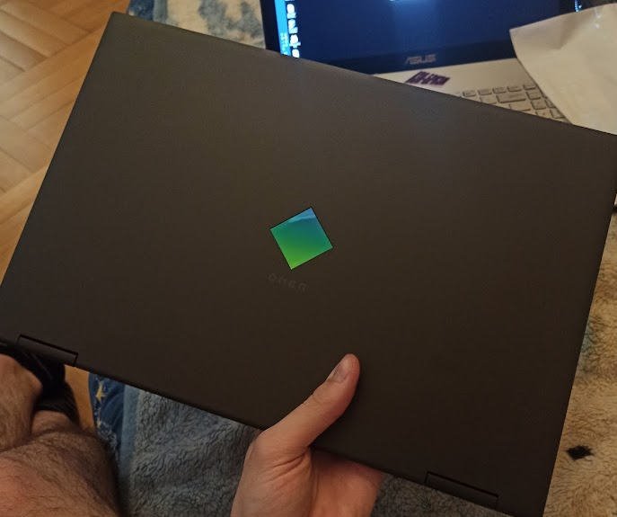
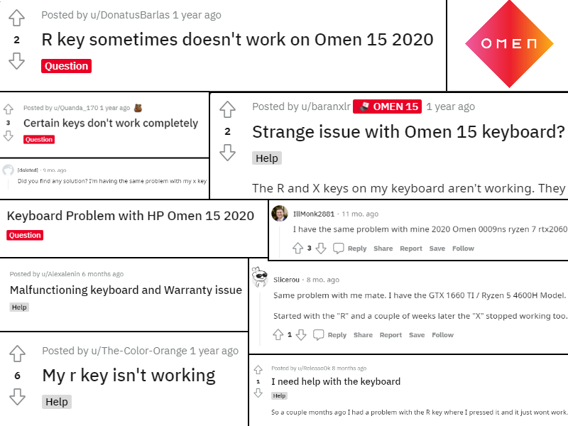
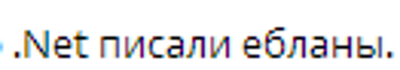

Если поймали нажатие кнопки и эта кнопка -- правый Ctrl, отправляем 'x'
17.05.2022
В апреле прошлого года я купил себе ноутбук Omen 15.

Примерно через полгода его использования я начал замечать, что с кнопкой 'X/Ч' происходит что-то неладное. Время от времени она не реагировала на нажатие с первого раза, а иногда и со второго и с третьего.
Сначала я, естественно, подумал, что под клавишу что-то попало. Я продул клавишу сжатым воздухом, но проблема не решилась.
Вуаль загадочности докидывало и нестабильное воспроизведение проблемы. Бывали дни, когда весь день всё работало идеально,
а на следующий день сколько ни жми, никакой реакции нет.
Клавишу я точно ничем не заливал, поэтому я начал гуглить что-то вроде "omen 15 x key".
И нашёл сабреддит Omen.

Сабреддит полон жалоб на переставшие работать R и X
Множество людей жаловались, что на их ноутбуке со временем начинали лагать кнопки R и X. Внятного решения никто не предлагал, хотя некоторые рассказывали, что они сдали ноутбук по гарантии и проблема решилась.
Правда, другие пользователи уточняли, что так как проблема связана не с самой клавиатурой, а с неким браком материнской платы, ноутбук не ремонтируют, а просто заменяют на другой, более новой сборки. При этом у одного из реддиторов спустя несколько месяцев проблема продолжила воспроизводиться и на новом ноуте.
Гарантия на этот момент у меня всё ещё была активна, но смущало то, что было много жалоб и на некачественный сервис, и на то, что проблема восстанавливается спустя время, и на то, что ноутбук не ремонтируют, а просто заменяют (т.е. надо переносить всю информацию, а так же настраивать всё рабочее окружение, что занимает примерно дня три), а главное -- СЦ держит у себя ноут минимум 2 недели, а обычно около месяца.
Ноут я покупал для того, чтобы я на нём мог работать, и я специально подбирал характеристики так, чтобы он мог компилировать большие солюшены (и не падать при этом в БСОД из-за кончившейся ОЗУ, как предыдущий), поэтому сидеть без ноута несколько недель я не мог. Пришлось оставить надежды на то, что проблему удастся решить напрямую, и начать заниматься главным занятием кодера -- сочинять костыли.
Я решил попробовать написать программу, которая бы ловила нажатие на какую-нибудь не особо нужную клавишу и отправляла нажатие X вместо неё. Благодаря стаковерфлоу и случайно найденному репозиторию чувака, который написал смешную программу с чпокающим котом, я написал код, который при нажатии правого Ctrl должен был имитировать нажатие X.
Если поймали нажатие кнопки и эта кнопка -- правый Ctrl, отправляем 'x'
Всё заработало как я хотел, я добавил иконку в трей, закинул ярлык на exe в папку "Автозагрузка" и пошёл спать.
Как всегда, ничего не работает просто. Включив компьютер в следующий раз и нажав правый Ctrl, я обнаружил, что хоть нажатие 'X' и имитируется, но при этом это нажатие не учитывает Shift (т.е., всегда отправляется в нижнем регистре), Ctrl (т.е., хоткей "Вырезать" не работает) и так далее. Я сильно удивился этому, потому как вчера при тестировании всё работало. Я запустил студию, начал отлаживать код -- всё работает как надо, на Ctrl и Shift реакция есть. Странно.
Перезагрузил компьютер снова -- проблема вернулась. Выяснилось, что проблема исчезает до следующей перезагрузки, только если заново собрать exe. Умные люди в чате предположили, почему именно это может происходить.

Затем умный человек в чате предложил использовать
SendInput
вместо SendKeys. Я переписал код следующим образом:

SendInput вместо SendKeys

Метод SendX
Всё заработало как я хотел, я добавил иконку в трей, закинул ярлык на exe в папку "Автозагрузка" и пошёл спать.
Прошёл месяц и у меня начала лагать ещё и кнопка 'R/К'. Я сильно не удивился, потому что на сабреддите R упоминалась даже чаще (возможно, потому, что она в целом чаще используется и это проще заметить). Однако на этот раз проблема заключалась в том, что я не мог придумать клавишу, которую я бы больше совсем не использовал и которую, соответственно, можно было бы использовать под 'R'.
В целом, кандидата было 2 -- правый Alt и кнопка Apps (та, которая открывает контекстное меню). Я решил, что Apps я уж точно никогда не буду использовать и решил поставить хук на неё.

Однако кнопка Apps отличалась от правого Ctrl -- у многих приложений уже были свои хуки на неё, из-за чего при её нажатии одновременно отправлялась 'R' и открывалось контекстное меню.
Документация достаточно прямолинейна по этому вопросу -- мол, если не хочешь отдавать хук другим программам,
не вызывай CallNextHookEx в конце своего коллбэка, а просто возвращай 1 и дело с концом. Так я и сделал.

ну и тут короче всё заработало я пошёл спать бла-бла-бла как обычно нихера не завелось сходу, контекстное меню всё так же открывается.
В общем, тут я промаялся достаточно долго, пока не понял, что контекстное меню много где привязано не на WM_KEYDOWN,
а на WM_KEYUP. Добавил return 1 на WM_KEYUP и контекстное меню перестало появляться. Ура?
Почти, потому что в некоторых приложениях (например, VS Code), контекстное меню открывается всё-таки по WM_KEYDOWN, а ещё
надо учитывать то, что если приложение поставило свой хук после моих, то его коллбэк будет вызван раньше и контекстное меню всё равно откроется...
Я оставил решение этих проблем Алихмену из будущего, а сейчас я просто написал весь этот пост, активно используя RCtrl и Apps, и
прекрасно себя чувствую.